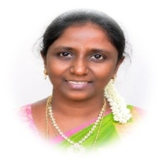

An Appraisal on Image Blurring and Denoising Techniques
Aspire Special Issue – In House Journal

Assistant Professor, Department of MCA. Academic and research interests span multimodal biometrics, artificial intelligence, deep learning, image processing and information security.
Ms. S. Selvarani is an Assistant Professor in the Department of Master of Computer Applications (MCA), with academic, teaching and industry experience. She has been associated with Fatima College, Madurai, since 2013 and is pursuing a Ph.D. in Computer Science at The Gandhigram Rural Institute.
Assistant Professor
Department of MCA
Fatima College, Madurai
Ph.D. in Computer Science
The Gandhigram Rural Institute
2022–Present
Tamil · English · Hindi
Lady Doak College, Madurai
Fatima College, Madurai
Madurai Kamaraj University
The Gandhigram Rural Institute
Computer Science & Applications
Web-Based Client Development & Application Development Foundation
Intermediate Skills in Software Testing with Visual Studio 2013
Assistant Professor
Faculty
Assistant Professor
Temporary Software Trainee
.NET Developer
Publication details below are transcribed from the supplied academic profile. Please verify bibliographic metadata and indexing status against the publisher records before formal submission.
Aspire Special Issue – In House Journal
International journal of Advanced Research, Ideas in Innovations in Technology
European Chemical Bulletin (SCOPUS)
Journal of the Asiatic Society, Mumbai (A UGC Care Listed Journal)
European Union Digital Library (OPEN ACCESS JOURNAL)
Springer Nature
Advances in Intelligent Systems Research (SPRINGER NATURE)
International Research Journal on Advanced Engineering Hub (IRJAEH)
International Research Journal on Advanced Engineering and Management
Excellence, Research Culture and Dedicated Service to the Student Community and the Institution · Fatima College (Autonomous), Madurai
Project on Empowering Student Mental Health · Fatima College Alumnae Association (POWER) · ₹15,000
Computer Graphics: A Perspective Approach · International Level Book · August 2024 · Vaigai Digital Marketing, Madurai
Explore publications, citation records and researcher identifiers through the following academic platforms.
For academic and research correspondence: selvarani.mca@fcmdu.edu.in